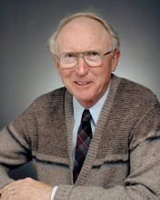

Please note: the AAS Obituaries are temporarily being hosted on this website while their full content is being ingested into the PubPub publishing platform newly adopted by the Bulletin of the American Astronomical Society. When the migration is complete, your existing links will take you to the final, migrated content. Contact peter.williams@aas.org with any questions.
Louis C. Haughney (1925-2018)
Louis (Lou) Charles Haughney, longtime project manager of NASA’s Kuiper Airborne Observatory, died on 17 March 2018 at the age of 92 in San Carlos, California. Born on 25 March 1925 in Erie, Pennsylvania, to Charles F. Haughney and Winifred (Sweeney) Haughney, Lou attended Sacred Heart school, Cathedral Preparatory School for Boys, and Gannon College, all in Erie. After graduation, Lou taught mathematics and physics before becoming a physics instructor at Gannon College.
In 1957, Lou joined the Nuclear Physics Branch at the National Advisory Committee for Aeronautics (NACA). Within two years, NACA was absorbed into the newly established NASA. In 1959, Lou took a leave of absence to pursue graduate studies in physics at the University of California at Berkeley. He returned to NASA in 1961 at its Ames research facility, at Moffett Field, California, where he worked in the Physics Branch and the newly formed Airborne Science Program, which used aircraft-borne instruments to conduct scientific research. Notable projects included observations of solar eclipses, comets (Halley, Ikeya-Seki, and Kohoutek), auroras, and Supernova 1987A. Lou participated in observations of four total solar eclipses; however, his duties as mission director kept him at the control console in the plane and he was not able to peer out a window at any of these eclipses. (Lou did witness the “Great American Solar Eclipse” of 2017 with several family members in central Oregon — as a civilian observer.) In addition, three days after the eruption of Mount St. Helens, Lou was aboard the NASA/Ames Research C-141 aircraft as it underflew the ejecta plume over Utah to conduct upward-looking radiometry in the 20- to 40-micron band.
In 1978, Lou was appointed project manager of NASA’s Kuiper Airborne Observatory, whose 36-inch telescope conducted infrared astronomy from Earth's upper atmosphere. He attended to missions that flew out of Moffett Field, Honolulu, American Samoa, Australia, and New Zealand, excursions that left his wife Helene to take care of their four children.
Lou retired in May 1990, after which he embarked on a career as a volunteer for Project Astro, the World Affairs Council in San Francisco, and Swanton Pacific Railroad Society. Into his nineties, he volunteered at local schools. He and his wife Helene traveled widely in retirement, often with members of the Catholic Alumni Club of San Francisco. Lou served as a lector for many years at St. Charles Church in San Carlos, California.
Lou is survived by his wife Helene (McGuire), whom he married in 1966; their four children and spouses: Peter (Ginger) Haughney, Laura (David) Gilbert, Alice (James) Reese and William (Michelle) Haughney; and grandchildren: Madelyn, Anna, Jeannie, Nathaniel, Jonas, Shaun and Andrew, as well as more than fifty nieces and nephews from both the Haughney and McGuire families.
Photo courtesy of the family.
Obituary written by: Alan Hirshfeld (UMass Darthmouth)
BAAS Citation: BAAS, 2018, 50, 030